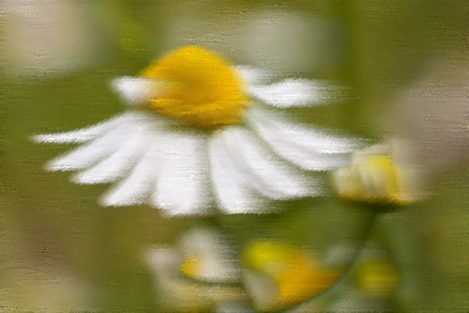
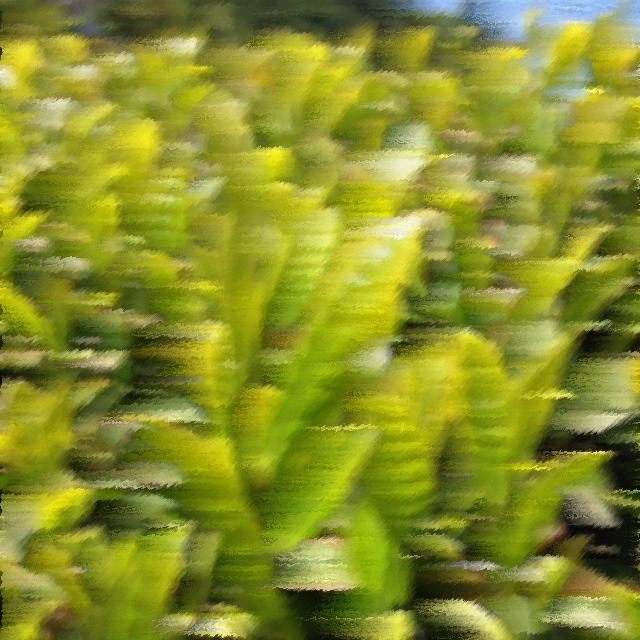
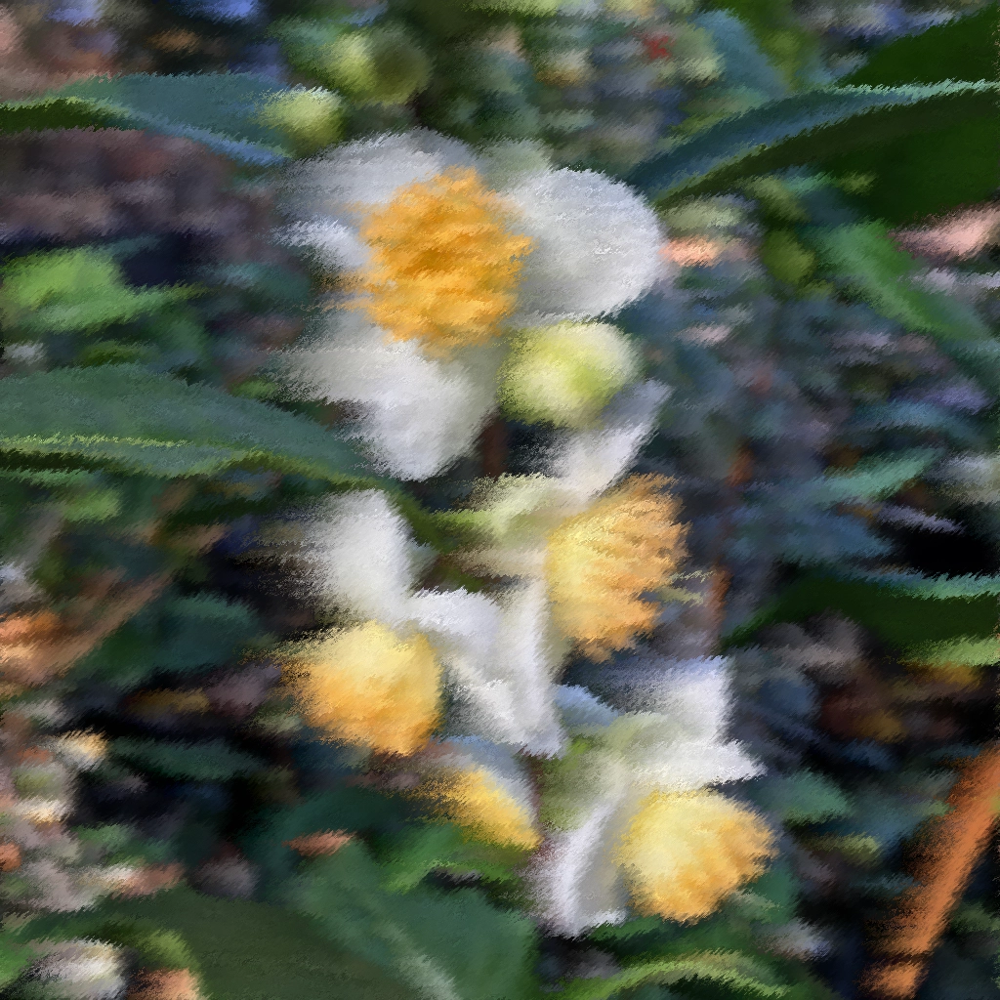

Green tea, rosemary, and ginkgo create a clear, attentive blend designed for steadier concentration and sustained mental work.
Chamomile, valerian root, and lemon balm are combined to soften mental tension and support a slower transition into rest.
Black tea, ginger, and peppermint build a brighter, more activating blend intended to support alertness, circulation, and mental lift.
Chamomile-derived apigenin is visualized here as a slowing and softening of signaling, creating a calmer neural atmosphere.